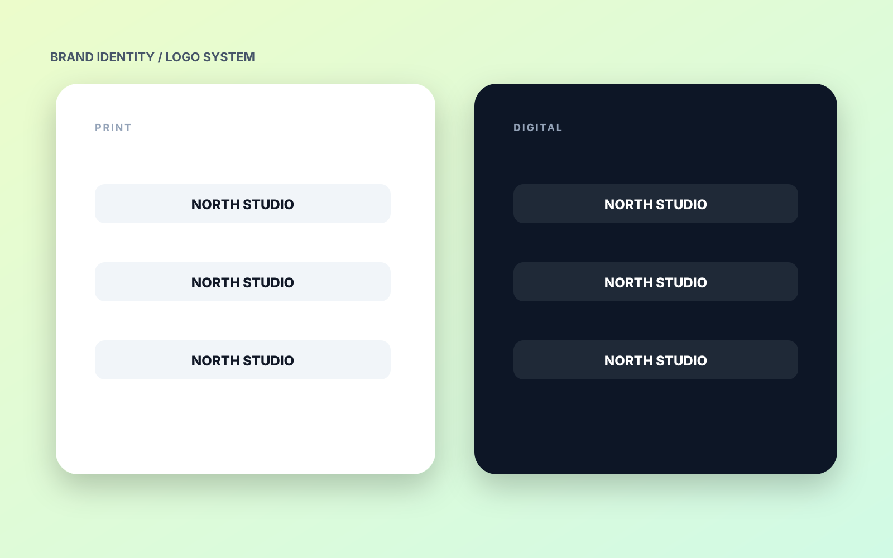

← Все инструменты
Tool / Adobe Premiere Pro
Adobe Premiere Pro.
Монтаж Reels, YouTube и рекламы — основной рабочий инструмент в соответствующем этапе проекта.
Для чего
Задача
Использую инструмент там, где нужен быстрый, управляемый и визуально аккуратный результат.
Workflow
Процесс
Инструмент является частью общего пайплайна, а не отдельной самоцелью.
Результат
Финал
Подготовленные файлы, preview, прототип или production-ready asset.

Посмотреть реальные кейсы
Откройте портфолио и посмотрите, как разные инструменты работают внутри цельного проекта.
К кейсам →